Bayesian inference in differentiable generative models with Mici
Matt Graham
Centre for Advanced Research Computing
🌍 Bayesian inference
Bayes theorem describes how to combine
prior assumptions about the world,
with information from observations,
to give our posterior beliefs given the observed data.
As we get more observations we update our posterior beliefs.
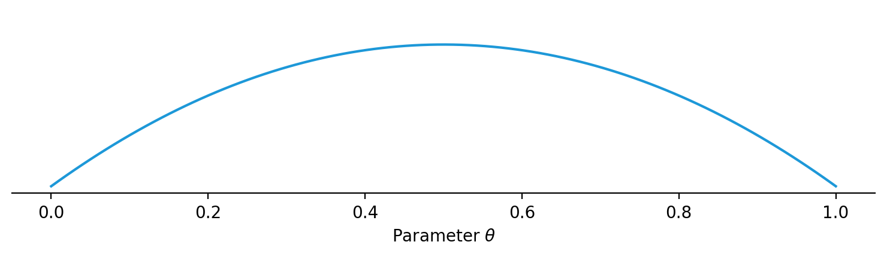
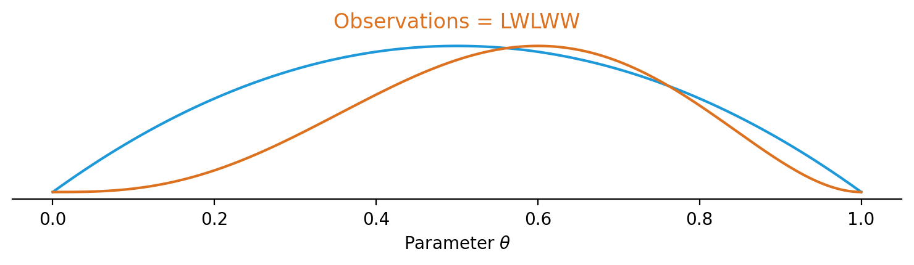
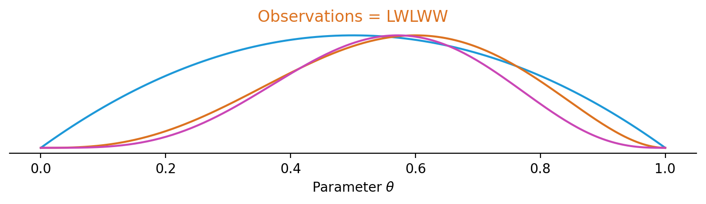
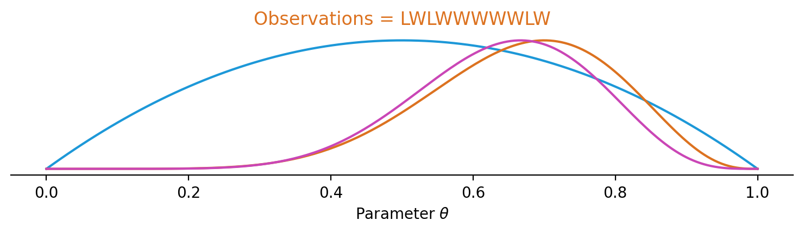
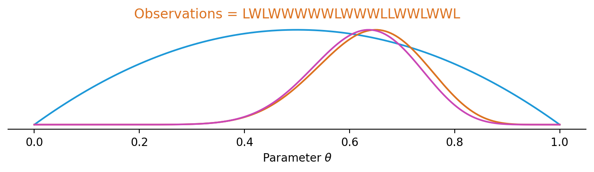
🎲 Monte Carlo method
Key operation to perform with posterior is integration.
In general integrals cannot be computed analytically.
If we can sample from posterior we can estimate integrals as averages over samples.
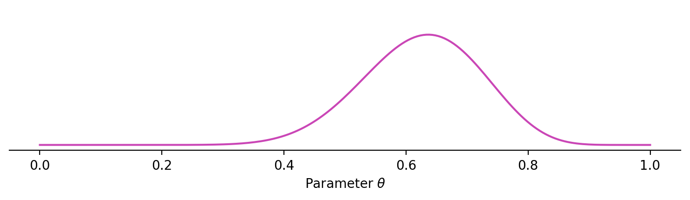
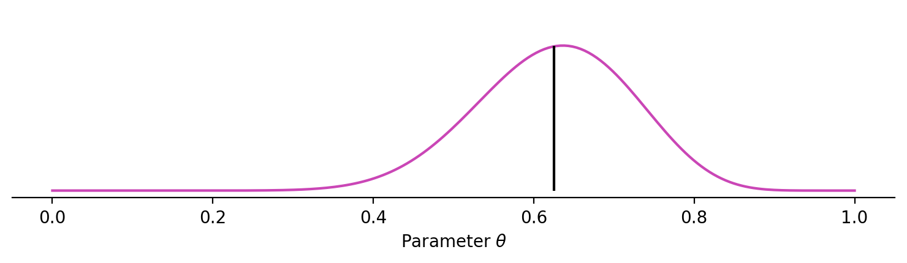
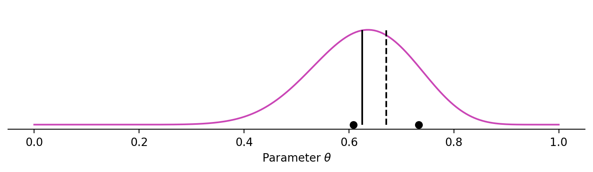
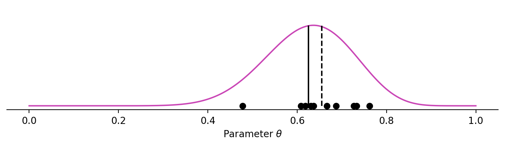
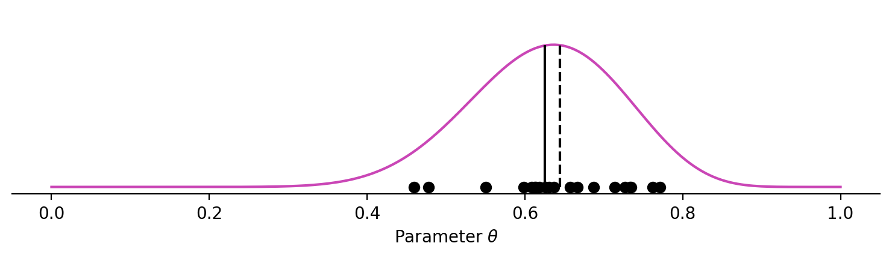
⛓️ Markov chain Monte Carlo (MCMC)
Typically we cannot independently sample the posterior.
Instead generate chain of dependent samples.
Algorithms exist to ensure distribution of chain of samplesconverges to posterior as number of samples increases.
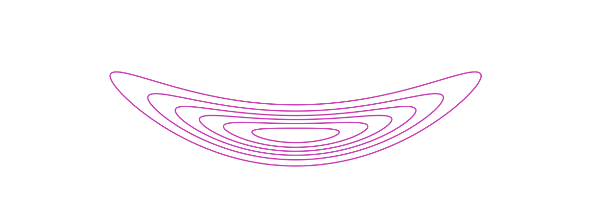
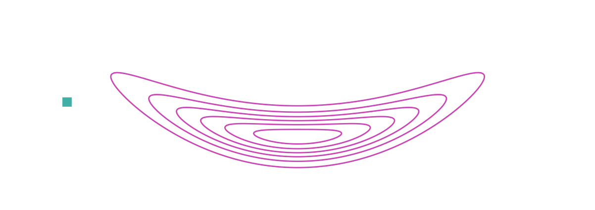
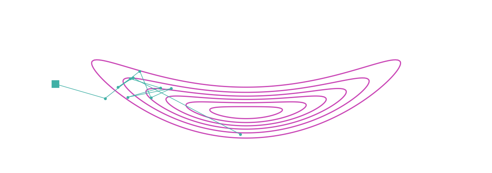
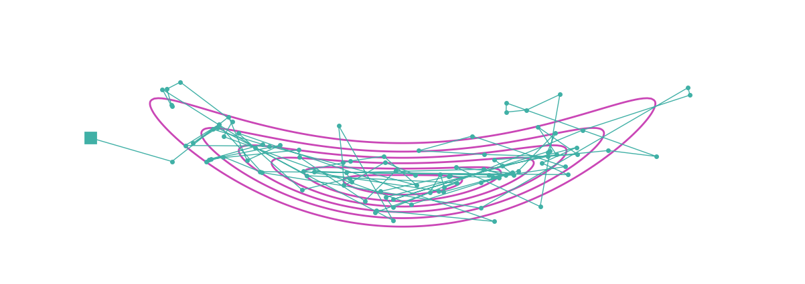
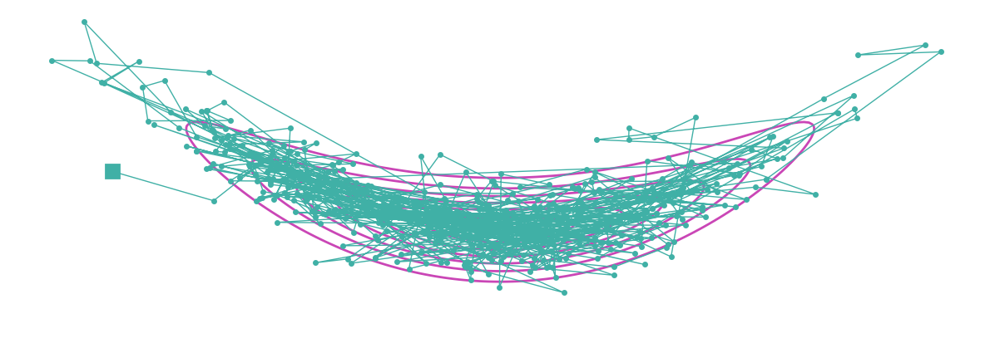
Mici is a Python package providing implementations of MCMC methods for approximate inference in probabilistic models.
Focuses on MCMC methods for differentiable generative models based on simulating Hamiltonian dynamics.
Named after Augusta ‘Mici’ Teller.
✨ Features
🧩 A modular design allowing use of a wide range of inference algorithms by mixing and matching components.
🔢 Agnostic to numerical backend used for computing model functions and derivatives.
🌐 Implementations of methods for sampling from distributions on manifolds.
🚀Computationally-efficient inference via transparent caching of the results of expensive operations.
💽 Memory-efficiency for large models by memory-mapping chains to disk.
🌐 Demo: Spherical signal estimation
Assume noisy and partial observations \(y\) of a spherical signal \(f\)
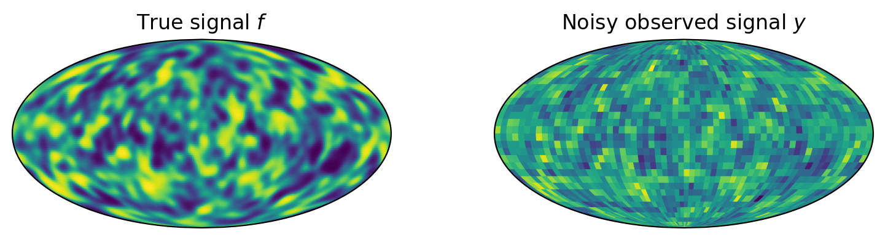
For example - \(f\) cosmic microwave background radiation field and \(y\) data from land / space based observatories.
🌐 Demo: Spherical signal estimation
The spherical signal is assumed to be from a prior distribution representing assumptions about its properties.
Here we assume signal \(f\) is a non-linearly transformed Gaussian random field on the sphere with output scale \(\alpha\) and length scale \(\ell\) parameters.
Given observations \(y\) and our prior model we would like to infer posterior on parameters \(\theta = (\alpha, \ell)\) and signal \(f\).
🌐 Demo: Spherical signal estimation
Use JAX + s2fft to generate spherical Gaussian random fields with GPU-acceleration.